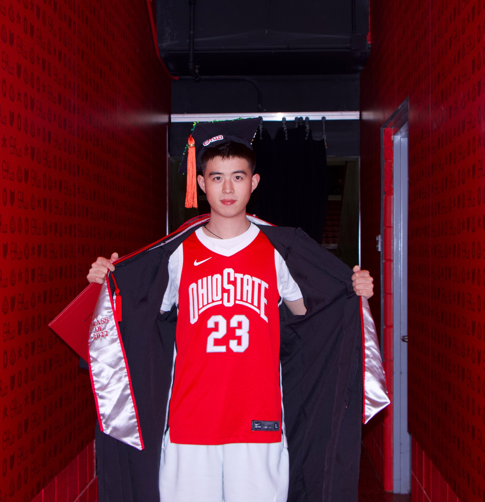

MemeBridge: A Dataset for Benchmarking and Mitigating the Bidirectional Cultural Gap in Meme Interpretation.
ACM SIGKDD Conference on Knowledge Discovery and Data Mining.
Researcher / Systems Builder
Ph.D. Student in Computer Science
Texas A&M University
Building intelligent agents and data-driven systems for scientific discovery.

Department of Computer Science & Engineering
Howdy! I'm Hangxiao Zhu, a Computer Science Ph.D. student in the Department of Computer Science & Engineering at Texas A&M University, where I am fortunate to be advised by Prof. Yu Zhang. My research interests center on Agent System, Data Mining, and AI for Science. I earned my Master's degree from Washington University in St. Louis under the invaluable mentorship of Prof. Alvitta Ottley. Before that, I earned my Bachelor's degree from Ohio State University. I also gained research-intern experience with Prof. Ming Yin at Purdue University.
Outside of academics, I'm a huge fan of football and basketball, and I often visit r/OhioStateFootball, r/Lakers, and r/Texans.
Ph.D. / Current
Computer Science · Advisor: Prof. Yu Zhang
Master's
Mentor: Prof. Alvitta Ottley
Bachelor's
Research Internship
Mentor: Prof. Ming Yin
ACM SIGKDD Conference on Knowledge Discovery and Data Mining.
Findings of the Association for Computational Linguistics: ACL 2026.
Preprints.org manuscript.
CHI Conference on Human Factors in Computing Systems.
CHI Conference on Human Factors in Computing Systems.
Master of Science thesis, Washington University in St. Louis.
The 2023 Conference on Empirical Methods in Natural Language Processing.